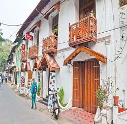
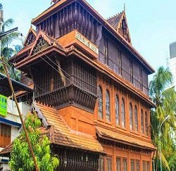
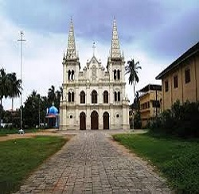

A charming seaside area, Fort Kochi is known for its Dutch, Portuguese, and British colonial architecture, and elaborate bamboo fishing nets at Fort Kochi Beach. St. Francis Church was the original burial site of explorer Vasco da Gama. Upscale eateries and chic cafes serve Keralan specialties, and quaint shops sell cotton clothing and handmade souvenirs. Heritage buildings house contemporary art galleries.
Read moreFolklore Museum aims to provide art education to the students and helping to provide visual and academic knowledge to the art lovers, researchers and travelers from all over the world. Folklore museum is the only architectural museum in Kerala and the treasure trove of stone, wood and bronze sculptures, ancient terracotta, stone Age objects, jewellery, paintings, oil lamps, musical instruments, tribal and folk art,
Read moreThe National Shrine Basilica of Our Lady of Ransom, Vallarpadam-Ernakulam, is a large centre of pilgrimage, and the major Christian pilgrim centre of India. According to the Holy See, the apparition of the Virgin Mary in Vallarpadam is the only approved one in India.
Read more